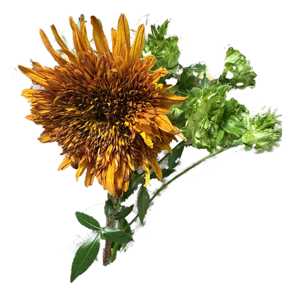

Works


My Works

花岡 希美
hanaoka nozomi
長野県茅野市出身。自然豊かな環境で育ちました。
スポーツが好きで高校を卒業したら柔道整復師、鍼灸師になるために上京。
卒後は外傷のスペシャリストのもとで修業に励んでいました。退職後は広告代理店んの営業事務を務めながら
ウェブというものに初めて触れました。
その他事務職を務め、本格的にITの業界に足を踏み入れるべく今コーディングの勉強に励んでいます。
好きなアーティストは[Perfume / ELLEGARDEN / 緑黄色社会 / Mrs.GreenApple / ヨルシカ / Vaundy] です。
小さいころからピアノを、中学生からエレキギターを始めて、ギターはたまに暇があれば弾いています。
テレビっ子だったのでお笑い番組をよく観ていました。毎年M-1やTHE MANZAIを楽しみにしています。好きなコンビは東京０３とタイムマシーン3号です。
中高とバスケ部でした。運動はそんなに嫌いではないので今でも少し時間が空いたら家でトレーニングをしたり、以前はパルクールを習っていました。パルクールを始めたら、色々な世代な人との交流ができて見識が深まります。
私が尊敬する人はいつも笑顔で、誰かが楽しそうなら一緒に楽しむし、誰かが悲しいなら肩を並べて一緒に悲しむ。他人を自分のことのように考える人です。
これは人に”気を使う”のではなく、その人を本当に大切にしているからこそその人を想って”気を遣う”ということだと思っています。
もちろん余計なお世話をすることはありません。
私はこれからの人生、自分の手が届く範囲の人を思いやれる。気遣いができる。
生活だけじゃなくお仕事の面でも自分が作るものを主張しすぎず、相手のことを気遣える提案や制作ができるようになりたいです。